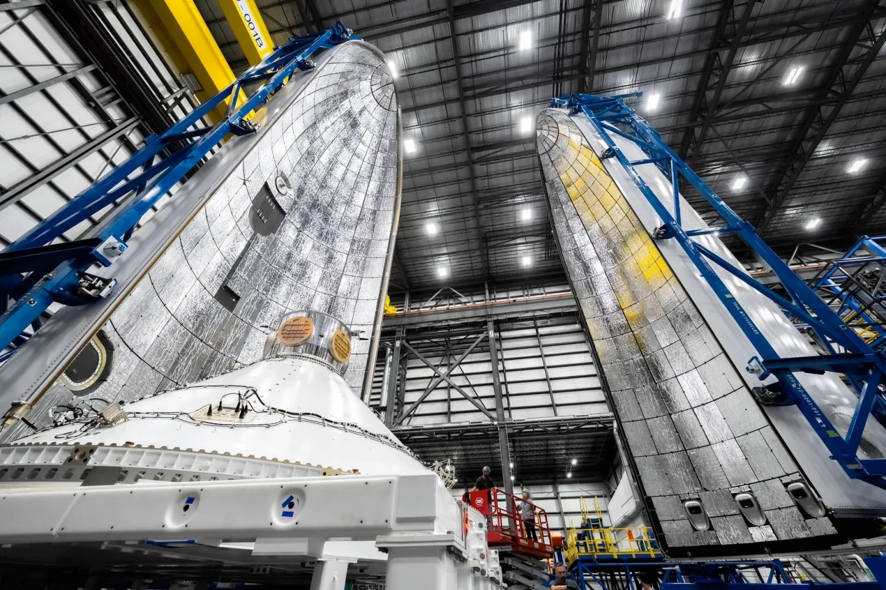
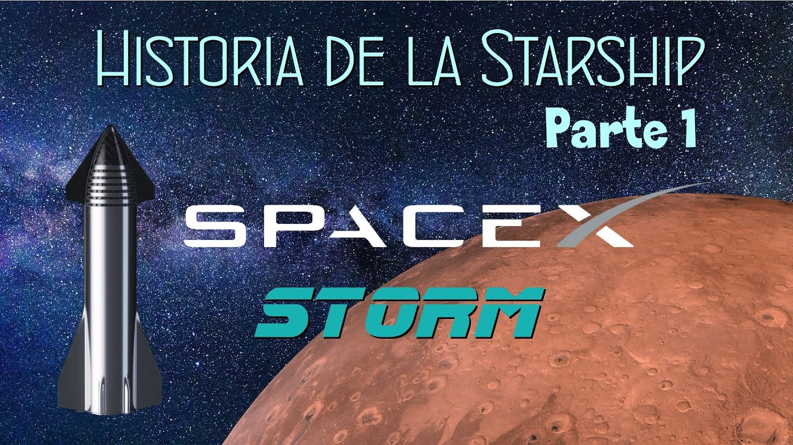

Notícies:
Blue Origin says first New Glenn launch still scheduled for 2024
Blue Origin es mostra optimista i afirma que al vol inaugural del seu nou cohet, el New Glenn, es fara aquest 2024 tot i no poder complir amb la data anunciada de llançar-lo el 9 de desembre.
Elon Musk quiere ahora su propia ciudad: Starbase, el cuartel general de SpaceX
Elon Musck ha solicitat a Texas que Starbase, el complex industrial i base d'operacions d'SpaceX, es converteixi de manera oficial en un nou municipi.

NASA Reveals Why Its Ingenuity Helicopter Crashed On Mars
La NASA revela quina va ser la causa que va portar a l'Ingenuity, el primer helicopter en volar per Març, a un accident que va causar la perdua del sorprenent demostrador tecològic

Vídeos:
Actualidad y noticias del ESPACIO [Semana 49] | 🚀CDM News
Video en espanyol amb les noticies més destacades del sector aerospacial a nivell mundial.(Recomano veure videos anteriors per consultar més notícies)
Historia de la Starship: Como SpaceX y Elon Musk quieren llevarnos a Marte. Parte 1
Primera part d'una serie de videos en espanyol dedicats a repassar la història i desembolupament de la nau Starship.(Recomano veure tots els videos ja que aquesta serie de videos són una cronologia molt detallada)
